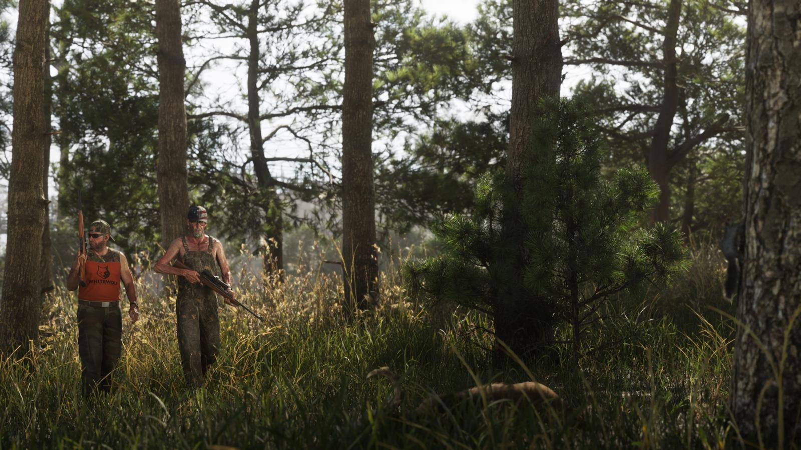
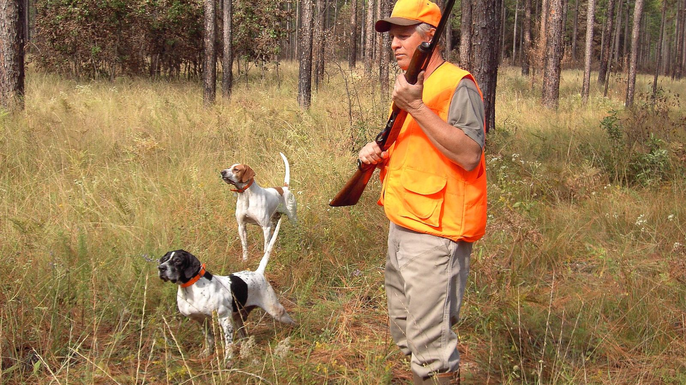

Оранжевые жилеты охотников
Опубликовано:
Два охотника с винтовками в ярко-оранжевых жилетах — ровно то, чего требует закон Флориды на государственных землях.


- Rockstar: Mount Kalaga — место для охоты, рыбалки и езды по бездорожью.
- На кадре охотники в ярко-оранжевых жилетах.
- Во Флориде охотиться на оленя на государственных землях без 500 кв. дюймов оранжевого запрещено.
- Правило не действует в сезон охоты с луком и на частной земле.
Что в игре
Rockstar описывает Mount Kalaga как национальный парк для охоты, рыбалки и езды по бездорожью. На официальном кадре двое идут через высокую траву с винтовками — оба в кислотно-оранжевых жилетах.
Что в реальности
«Запрещено охотиться на оленя или сопровождать другого охотника на оленя на государственных землях, если каждый не носит поверх одежды не менее 500 квадратных дюймов флуоресцентного оранжевого материала».
Комиссия по охране рыбы и дикой природы Флориды (FWC), правила охоты
500 квадратных дюймов — это примерно 0,32 м², то есть полноценный жилет. Оранжевое должно быть выше пояса, можно дополнить кепкой. Правило не действует в сезон охоты только с луком и на частной земле.
Олени плохо различают оранжевый: у них нет рецепторов для длинных волн, и жилет для них почти сливается с листвой. А человек видит его издалека. Поэтому оранжевый защищает охотников друг от друга и не мешает самой охоте.
Совпадает и отличается
| Флорида | Mount Kalaga | |
|---|---|---|
| Оранжевый жилет | Обязателен на гос. землях | 🟢 На кадре |
| Охота на оленя | Да | 🟡 Олени есть на кадрах |
| Штраф без жилета | Да | Узнаем в игре |
Источники: Rockstar Games (описание Mount Kalaga National Park, кадры); Florida Fish and Wildlife Conservation Commission — Hunting Regulations: General Information.
Реальные фото: Фото: The Florida Fish and Wildlife Conservation Commission, Public domain · Wikimedia Commons. Кадры игры: Rockstar Games.
Каждый день — одно сравнение: кадр игры рядом с реальным фото. Подписывайтесь:
YouTubeInstagramTikTok
 vs
vs
 vs
vs
 vs
vs